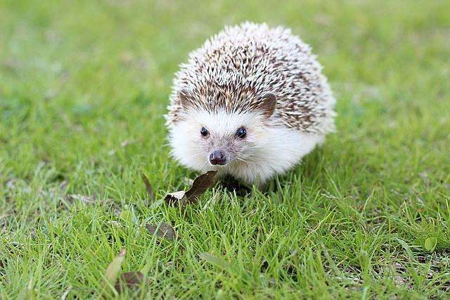
大耳猬（学名：Hemiechinus auritus），为猬科、大耳猬属的动物。大耳猬体型较小，耳大、尖、钝圆，尾短，耳后至尾基部的体背覆以坚硬的棘刺，棘刺自基部至刺尖依次为暗褐色、白色、暗褐色、白色的节环，少数棘刺全为白色。
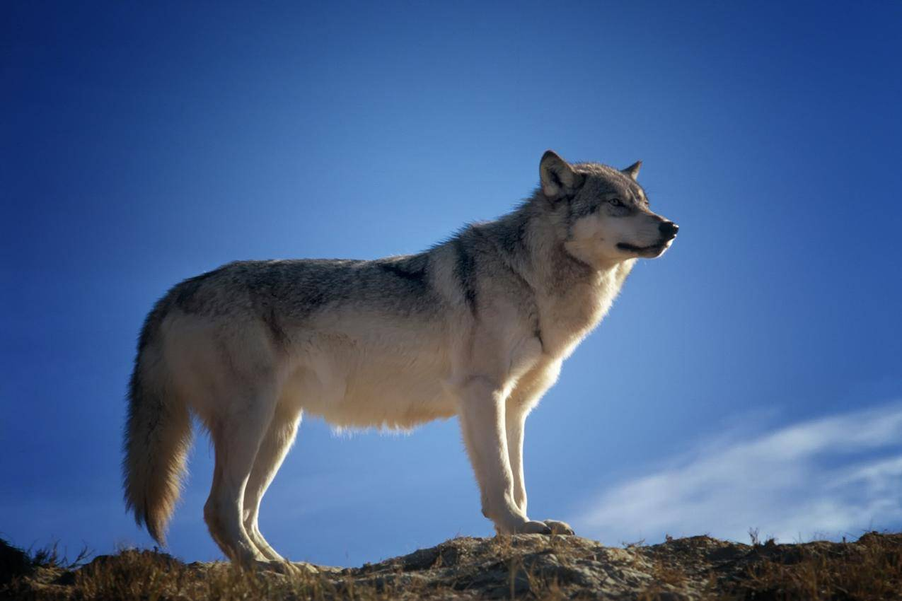
是食肉目、犬科的动物。共有11个亚种。体型中等、匀称，四肢修长，趾行性，利于快速奔跑。头腭尖形，颜面部长，鼻端突出，耳尖且直立，嗅觉灵敏，听觉发达。犬齿及裂齿发达。
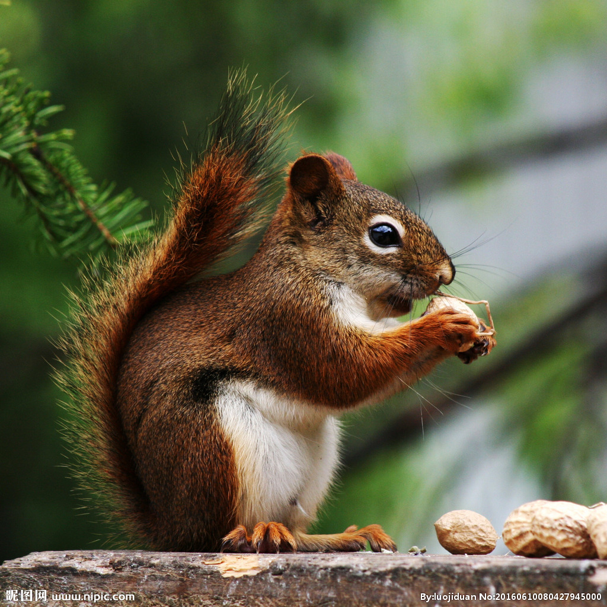
是啮齿目松鼠科动物。入选2000年8月1日发布的《国家保护的有益的或者有重要经济、科学研究价值的陆生野生动物名录》。
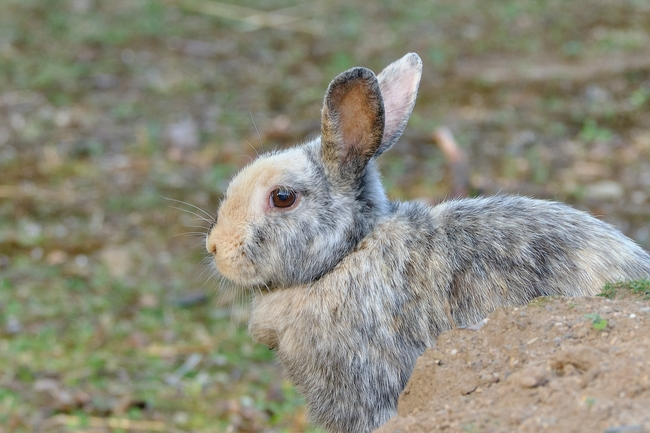
高原兔（学名：Lepus oiostolus）别名灰尾兔、绒毛兔，属于哺乳纲、兔形目、兔科、兔属的一种地栖啮齿类哺乳动物。
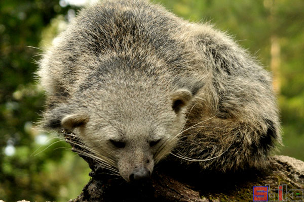
椰子狸具有夜行性，偶然也白天活动。营半树栖生活，善于攀缘，常成对一起觅食。其产仔季节主要在夏季7~8月，多在石洞或石隙中产仔，每年一胎，每胎3~4仔。
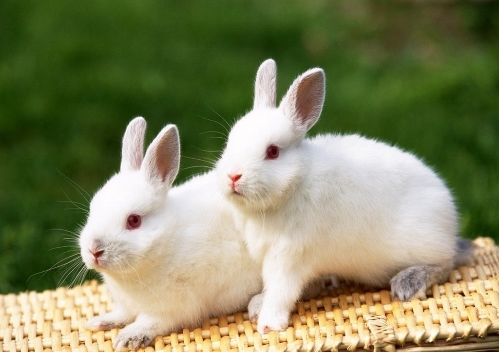
北兔善于奔跑、跳跃，平时无固定的巢穴，多晚上出来活动，主要以树皮、嫩枝和木本植物、草本植物为食，4月开始繁殖，每胎产仔3-6只，一般栖息于海拔高度300-900m高的针叶阔叶混交林中，分布于中国、俄罗斯联邦。
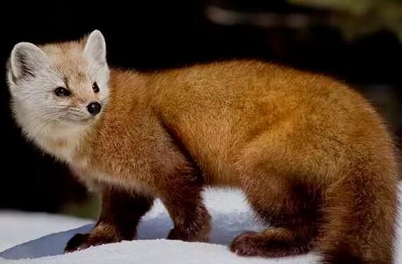
黄腹鼬体形似香鼬，但更细长，体长260-340毫米，体重200-300克，体毛短，背腹毛的分界线明显，体背面从吻端经眼下、耳下、颈背到背部及体侧、尾和四肢外侧均呈棕褐色
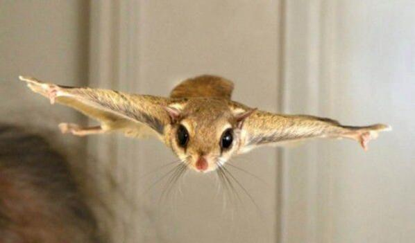
低泡鼯鼠也叫海南小飞鼠，是小型飞鼠。生境与习性 生活于海拔150-3500m山地原始林和次生林中。
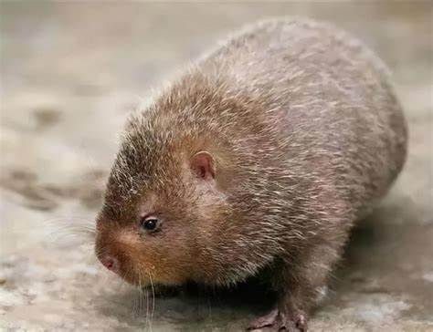
中华竹鼠（Rhizomys sinensis Gray）简称竹鼠，又名竹根鼠、竹根猪、竹狸、芒狸、竹鼬、茅根鼠、芭茅鼠，属于脊椎动物亚门、哺乳纲、啮齿目、竹鼠科。
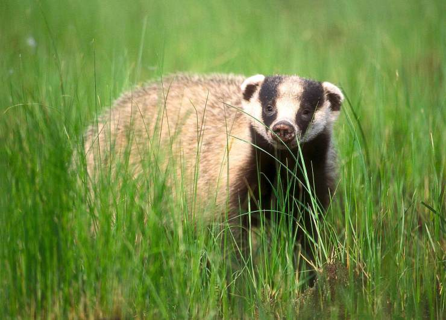
狗獾（学名：Meles meles），是鼬科、狗獾属的一种动物。狗獾在鼬科中体形较大，肥壮，颈部粗短，四肢短健，尾短，体背褐色与白色或乳黄色混杂，四肢内侧黑棕色或淡棕色。
灰背大鼯鼠也叫霜背大鼯鼠，体形与栗背大鼯鼠相似，但上体在暗栗褐色的基色上浓密地布满白色霜层，尤以头部为重，一些地区的标本头部全变为白色。
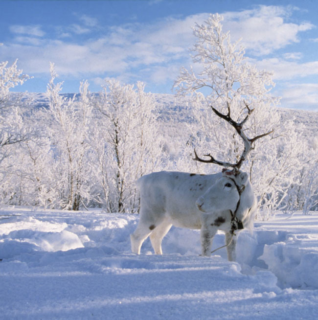
驯鹿（学名：Rangifer tarandus），又名角鹿。是鹿科驯鹿属下的唯一一种动物。身长约200厘米，肩高100-120厘米 [1] 。雌雄皆有角，角的分枝繁复是其外观上的重要特征。


![ 驯鹿 Rangifer tarandus 驯鹿（学名：Rangifer tarandus），又名角鹿。是鹿科驯鹿属下的唯一一种动物。身长约200厘米，肩高100-120厘米 [1] 。雌雄皆有角，角的分枝繁复是其外观上的重要特征。](images/驯鹿.jpg){kind=link}